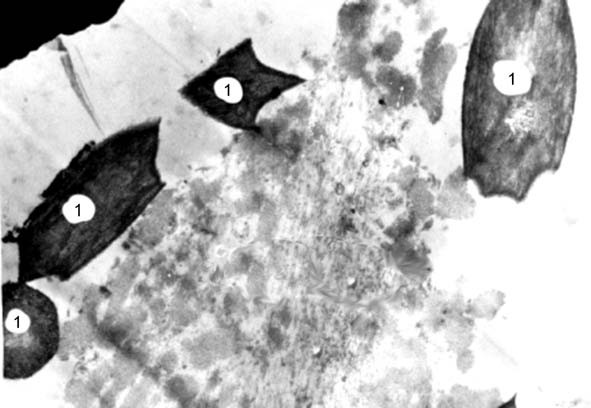
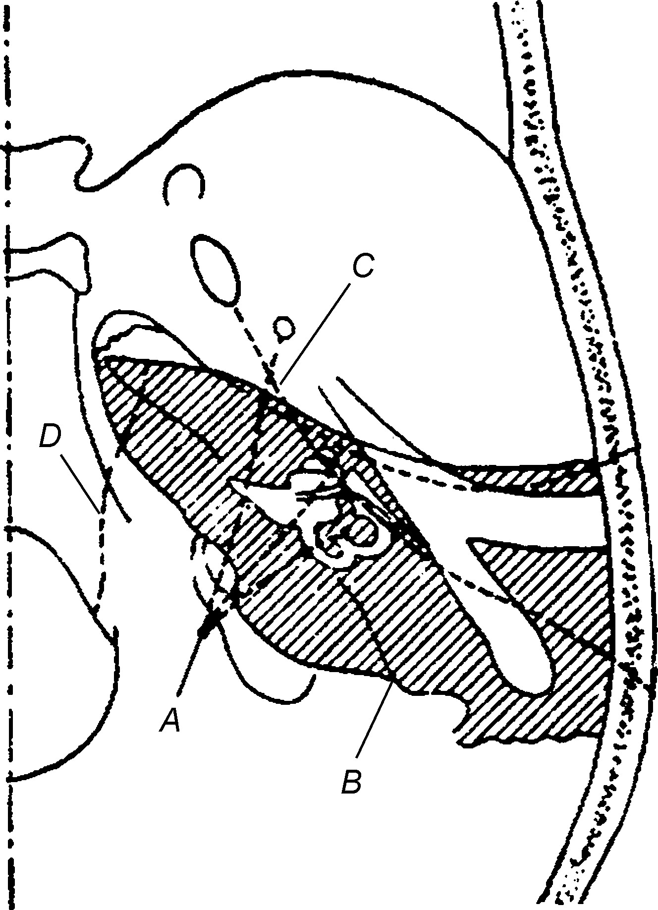
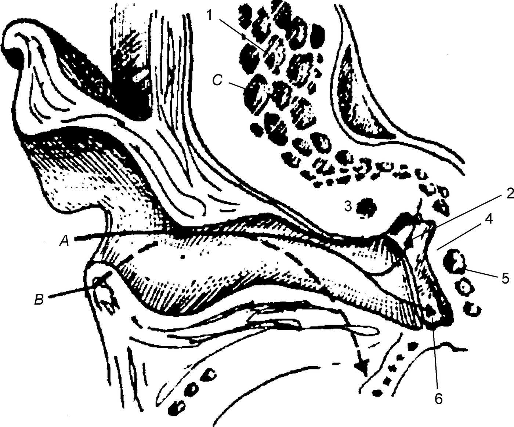

Травмы уха
Повреждения наружного уха
Наружное ухо и, в частности, ушная раковина в силу незащищенного анатомического положения довольно часто подвергаются повреждениям и поражениям. К ним относятся ушибы, отрывы (полные, частичные), ранения (огнестрельные, колюще-режущим орудием), ожоги (термические, химические), отморожения. Механизм этих поражений чрезвычайно разнообразен, следовательно, и их патогенез принципиально различен. Каждое из повреждений может вести либо к утрате органа, либо к его значительному обезображиванию с частичной утратой слуховой функции. Например, попадание в наружный слуховой проход щелочи или кислоты может привести к его полной атрезии и к тугоухости на пострадавшее ухо III или IV степени по кондуктивному типу.
Ушиб ушной раковины
Под ушибом (contusio) понимают закрытое механическое повреждение мягких тканей или органов, не сопровождающееся видимым нарушением их анатомической целости. Чаще всего этот вид повреждения ушной раковины относится к бытовой или спортивной травме, которая не сопровождается нарушением целости хряща и подкожным или поднадхрящничным кровоизлиянием.
При сильных механических повреждениях, сопровождающихся переломами или размозжением ушного хряща, наблюдаются специфические признаки, позволяющие определять степень поражения. Одним из таких признаков является кровоизлияние в ушную раковину, определяемое как отгематома.
Отгематома
Этиология. Отгематома (othaematoma) — ограниченное скопление крови в области ушной раковины, возникающее спонтанно (редко) или в результате локального ушиба. Спонтанные отгематомы могут возникать от незначительного давления на ушную раковину при лейкозе, гемофилии, авитаминозе, нарушениях трофики, алиментарной дистрофии, некоторых инфекционных заболеваниях, сопровождающихся нарушениями свертывающей системы крови, а также вследствие дегенеративных изменений хряща под действием холода. Отгематомы травматического генеза чаще возникают при тангенциальных ударах или резком давлении на ушную раковину или ее надломах (преднамеренный удар, в спорте — бокс, различные виды единоборств, особенно так называемая борьба без правил).
Морфологическая и клиническая картина. Локализуется отгематома чаще в верхней части наружной поверхности ушной раковины. Представляет собой флюктуирующую припухлость красновато-синего цвета, покрытую нормальной кожей. Субъективно ничем себя не проявляет, при пальпации безболезненна. Отгематома содержит жидкость, состоящую из крови и лимфы с преобладанием последней, поэтому цвет содержимого отгематомы светло-желтый, и сама жидкость не свертывается. В результате повреждения лимфатических и кровеносных сосудов жидкость скапливается между кожей и надхрящницей или между последней и хрящом. Мембрана вокруг гематомы не образуется. Могут наблюдаться повреждения хряща.
Причиной повреждения сосудов является механическое разъединение кожи с подкожной клетчаткой. Так как на медиальной поверхности ушной раковины связь кожи с надхрящницей более эластична, чем на латеральной, то отгематома на ней не возникает. Незначительные отгематомы могут рассасываться, но крупные без лечения в течение 3–5 недель организуются в плотную рубцовую ткань, в результате чего ушная раковина утрачивает свой рельеф и приобретает вид бесформенной «лепешки». Отгематома нередко рецидивирует вследствие повреждения лимфатических сосудов, преобладания лимфы в жидкости, слабости мышечной системы сосудистой стенки в этой области (вазоконстрикторов) и локального нарушения системы свертывания крови.
Опасность отгематомы заключается в возможности ее вторичного инфицирования. В этом случае возникают воспалительная гиперемия кожи над гематомой, распространяющаяся за ее пределы; боль в области ушной раковины, иррадиирующая в соседние области; повышение температуры тела. Несвоевременное вскрытие абсцесса приводит к перихондриту и некрозу хряща, следствием чего является деформация ушной раковины.
Прогноз в отношении выздоровления благоприятный, в косметическом плане — осторожный, при осложнении в виде перихондрита — осторожный, при хондрите — сомнительный и даже неблагоприятный.
Профилактика заключается в предотвращении ушного травматизма.
Частичные или полные отрывы ушной раковины
Этот вид травматизма наблюдается при сильных скальпирующих ушибах твердыми, чаще всего металлическими предметами на производстве или при попытке нанесения травмы другим лицом.
Повреждения наружного слухового прохода
Эти повреждения возникают значительно реже, чем повреждения ушной раковины. Их причиной бывают удары тупым или острым предметом в область наружного отверстия слухового прохода, пулевые и осколочные ранения. Объем травмы может быть ограничен кожно-перепончатой частью наружного слухового прохода или захватывает костную его часть с наличием или без перелома костных его стенок. Как правило, переломы костных стенок сопровождаются более обширными поражениями окружающих анатомических образований, граничащих с той или иной стенкой. Нередко при падении на подбородок или сильном ударе по нему возникает перелом передней стенки костного отдела наружного слухового прохода с вклинением головки нижней челюсти в ретроаурикулярную область.
Клиническая картина. Ранения наружного слухового прохода сопровождаются кровотечением из него и образованием в просвете кровяного сгустка, обусловливающего практически полную кондуктивную тугоухость. При удалении сгустка слух восстанавливается полностью лишь в том случае, если повреждение слухового прохода не сопровождается разрывом барабанной перепонки.
Пострадавшие жалуются на боли в ухе, резкую его заложенность. При отоскопии в наружном слуховом проходе определяются костные сгустки, а по их удалении — травмированные участки кожи. Пальпация пуговчатым зондом иногда позволяет исключить или установить повреждение костной стенки или наличие ранящего снаряда, однако действительное состояние травмированной области возможно определить лишь в результате рентгенографического исследования.
Повреждения наружного слухового прохода весьма часто сочетаются с повреждением ушной раковины и рассматриваются как травматическая болезнь наружного уха. При этом обращают особое внимание на функциональное состояние органа слуха и вестибулярного аппарата для исключения повреждения среднего и внутреннего уха. С этой целью применяют рентгенографическое исследование этих частей височной кости. При тупых травмах наружного уха обращают внимание на состояние ЦНС, поскольку при таких травмах нередко наблюдаются признаки сотрясения и даже ушиба головного мозга. Все больные с такого рода травмами наружного уха подлежат осмотру невролога.
Диагноз травматических повреждений наружного уха основан на анамнезе, отоскопической картине, зондировании раневого канала и рентгенографии. При наличии общих неврологических симптомов (головная боль, тошнота, рвота, дезориентированность, затрудненное общение) после специализированного ЛОР-пособия показана госпитализация в неврологическое отделение с наблюдением ЛОР-специалиста.
Прогноз в целом благоприятный, однако при несвоевременном оказании специализированной помощи или при неправильном лечении инфицированных повреждений в значительном числе случаев возникает обезображивание ушной раковины или стеноз или атрезия наружного слухового прохода, требующие в дальнейшем пластических оперативных вмешательств.
Повреждения барабанной перепонки
Повреждения барабанной перепонки делят на бытовые, производственные и военного времени. По патогенезу их разделяют на механические и ожоговые.
Этиология. Бытовые механические повреждения возникают при непосредственном воздействии на барабанную перепонку каким-либо предметом, введенным в наружный слуховой проход для его очищения от ушной серы или попавшим в него случайно, при ударе по ушной раковине открытой ладонью (резкое повышение давления в наружном слуховом проходе), при сильном чихании с зажатыми ноздрями (резкое повышение давления в барабанной полости) или при поцелуе в ухо (возникновение отрицательного давления в наружном слуховом проходе), приводя к разрыву барабанной перепонки. Механическое повреждение барабанной перепонки может возникнуть при падении на ухо, при более глубоких его травмах, сопровождающихся нарушением целости барабанной полости и пирамиды височной кости в случаях, когда линия перелома проходит через барабанное кольцо. К бытовым повреждениям могут быть отнесены термические и химические ожоги в результате несчастного случая. Эти ожоги, как правило, сопровождаются поражением ушной раковины.
Производственные поражения барабанной перепонки делятся на барометрические, обусловленные резким перепадом давления воздуха (в кессонах, барокамерах, в водолазных костюмах, при технологических взрывах), термические (в металлургической промышленности, в кузнечном производстве, гончарном деле) и химические (при попадании едких жидкостей в наружный слуховой проход и на ушную раковину).
Повреждения барабанной перепонки военного характера делят на огнестрельные (пулевые, осколочные) и барометрические, или детонационные (по Воячеку В. И.), обусловленные минно-взрывным действием.
Патогенез и патологическая анатомия. При повышении барометрического давления в наружном слуховом проходе или в барабанной полости возникает растяжение барабанной перепонки, при котором ее структуры подвергаются деформации. В зависимости от силы давления эта деформация может происходить на клеточном уровне или на микроволоконном и микрососудистом уровне. При таких травмах могут поражаться лишь отдельные элементы и слои барабанной перепонки без тотального нарушения целости всех ее слоев. При наиболее слабых воздействиях может наблюдаться инъекция сосудов в расслабленной части и по ходу рукоятки молоточка; при более сильной травме, связанной с разрывом сосудов барабанной перепонки, возникают кровоизлияния в нее, а при значительном барометрическом воздействии — полный разрыв, который по причине эластичности среднего слоя, растягивающего края раны, визуализируется как отверстие с неровными (рваными) краями, покрытыми небольшим количеством крови. Аналогичная, но морфологически более выраженная картина наблюдается при производственных и детонационно-взрывных травмах барабанной перепонки. Огнестрельные ранения отличаются значительными разрушениями не только барабанной перепонки, но и окружающих тканей.
Все виды механической травмы барабанной перепонки с нарушением ее целостности относятся к инфицированным, что создает опасность возникновения вторичной инфекции с тяжелыми клиническими последствиями (острый гнойный отит и мастоидит, лабиринтит, синус-тромбоз и др.)
Ожоги барабанной перепонки кислотами и едкими щелочами, как правило, приводят к ее полному разрушению, нередко — и к разрушению структур среднего уха и проникновению едкого вещества через вестибулярное и барабанное окна в ушной лабиринт с грозными последствиями для слуховой и вестибулярной функций.
Клиническая картина. Травмирование барабанной перепонки сопровождается появлением резкой боли, заложенности уха, тугоухостью и шумом в ухе. При отоскопии можно наблюдать различные варианты травматического повреждения барабанной перепонки — от легкой инъекции сосудов по ходу рукоятки молоточка до массивных кровоизлияний, щелевых разрывов, фестончатых перфораций до субтотальных дефектов. При наличии перфорации больные иногда сообщают, что при сморкании (опыт Вальсальвы) из поврежденного уха выходит воздух. Этот факт свидетельствует о наличии прободения барабанной перепонки, однако проводить пробу Вальсальвы не рекомендуется в связи с возможностью заноса инфекции в среднее ухо и поврежденную барабанную перепонку из носовой полости через слуховую трубу. Дальнейшее клиническое течение определяется степенью нарушения целости барабанной перепонки и возможным присоединением вторичной инфекции.
При небольших щелевых перфорациях в подавляющем большинстве их края слипаются, и наступает спонтанное излечение травмированной барабанной перепонки, после которого на ней либо не остается следов перфорации, либо образуются рубцы различных размеров, которые со временем пропитываются солями кальция. В этом случае они определяются как образования белого цвета, «встроенные» в толщу барабанной перепонки. В таких случаях слуховая функция сохраняется. При значительных разрывах с расхождением краев раны происходит массивное рубцевание барабанной перепонки с образованием грубых кальцификатов (так называемый адгезивный отит) или стойкой одиночной перфорации. В этих случаях выявляются признаки кондуктивной тугоухости различной степени.
При обширной травме барабанной перепонки в процесс могут вовлекаться слуховые косточки, их суставы и внутренние мышцы барабанной полости. Самым частым явлением при этом является разрыв молоточко-наковаленного или наковальне-стременного сочленения, а также перелом ножек стремени и подвывих или перелом его подножной пластинки. При разрыве цепи слуховых косточек наступает внезапная практически полная кондуктивная тугоухость, а при повреждении подножной пластинки стремени возникает резкий шум в ухе, тугоухость принимает смешанный вид, могут наблюдаться явления вестибулярной дисфункции и истечение перилимфы.
Прогноз зависит от объема и глубины повреждения барабанной перепонки и структур среднего уха, его определяют в отношении вторичной инфекции и слуховой и вестибулярной функций. В большинстве случаев при отсутствии осложнений прогноз благоприятен. Присоединение вторичной инфекции или наличие диссоциации цепи слуховых косточек делает прогноз сомнительным, и он зависит от дальнейшего специального лечения.
Термические поражения наружного уха
К термическим поражениям наружного уха относятся отморожения и ожоги. Чаще всего они сочетаются с поражением прилегающих участков лицевой области.
Отморожения
Отморожение (congelatio) — это локальное поражение, вызванное местным охлаждением тканей человеческого тела. Чаще всего наблюдаются отморожения ушных раковин, затем носа и щек. Поражения возникают тем быстрее, чем ниже температура воздуха и выше скорость ветра, влажность воздуха и кожи.
В мирное время отморожения возникают редко и только после утраты микроклимата подвергающегося охлаждению участка кожи. Указанный микроклимат обусловлен тончайшим слоем согретого кожей воздуха, прилегающим непосредственно к коже. Низкая температура и обдувание ветром удаляют этот слой и приводят к значительным потерям тепла тканями. Для предотвращения переохлаждения человек пользуется средствами, создающими искусственный микроклимат (одежда, обувь, головные уборы, отопление помещений). Утрата механизмов искусственной защиты от холода в бытовых условиях чаще всего наступает в состоянии алкогольного опьянения или в таких климато-метеорологических условиях, при которых действие холодового и ветрового факторов преодолевает существующие у него средства защиты. Частота отморожений в военное время и в различных экстремальных производственных и спортивных (альпинизм) условиях многократно возрастает.
Патогенез. В его основе лежат следующие механизмы. Прежде всего, это холодовой спазм сосудов кожи, обусловливающий нарушение микроциркуляции. Так, венный кровоток прекращается при температуре кожи 4–8 °С, а артериальный — при 0 °С. Сокращение кровотока в тканях начинается уже при температуре 23 °С. При охлаждении живой ткани в ней повышается связывание кислорода с гемоглобином в 3–4 раза, что сводит к минимуму разницу между содержанием в артериальной и венозной крови кислорода и углекислоты, а это, в свою очередь, приводит к гипоксии тканей, подвергающихся холодовому воздействию.
В патогенезе отморожения различают два периода — до согревания с лечебной целью отмороженной ткани (скрытый, или дореактивный, период) и после согревания (реактивный период), когда в тканях начинается демаркационный процесс, при котором проявляются участки поражения. В скрытом периоде нельзя ни клинически, ни гистологически определить признаки реактивного воспаления или некроза, поскольку в охлажденных тканях не созданы оптимальные температурные условия для реализации этих процессов. Только после согревания и по истечении нескольких дней можно установить окончательные границы и глубину поражения. При этом следует иметь в виду, что эпителиальные элементы кожи (сальные и потовые железы) гибнут раньше, чем ее соединительнотканная основа, потому в первые периоды развития отморожения очаги некроза могут располагаться гнездно.
По глубине поражения различают отморожение I степени, при котором поражается поверхностный слой эпидермиса; отморожение II степени, когда поражение достигает базального слоя эпидермиса с образованием пузырей; отморожение III степени, сопровождающееся некрозом кожи, подкожной клетчатки и участками надхрящницы (если речь идет об ушной раковине или пирамиде носа); отморожение IV степени, при котором наряду с некрозом кожи и надхрящницы наблюдается некроз хряща.
Клиническая картина. В клинической картине отморожения ушной раковины (как и других частей лица) различают латентный период, период начальных проявлений реактивного воспаления, период разгара, в котором формируются очаги некроза, период демаркации и отторжения некротизированных тканей, период стихания воспалительного процесса и заживления через рубцевание с обезображиванием пораженных участков тела или их полной утратой.
В скрытом периоде субъективные ощущения сводятся к специфическому ощущению холода, покалыванию и жжению, а также к особому чувству «холодовой боли». Затем наступает полная утрата чувствительности пораженного участка кожи, о чем пострадавшие узнают при дотрагивании до него, но чаще от встречных лиц, замечающих белый цвет отмороженного участка лица или ушной раковины. Сильно отмороженные участки в скрытом периоде становятся хрупкими, как пластина льда, и могут быть надломлены при попытке растирания или сгибания для отогревания. В периоде после согревания отмороженной ушной раковины (и носа) развиваются признаки реактивного воспаления и некроза, и лишь к концу 10–15-го дня можно окончательно классифицировать данное поражение по его степени.
В клиническом течении отморожения ушной раковины можно выделить период экспозиции (время действия холодового фактора), во время которого развивается дореактивный период, характеризующийся субъективными признаками и резким побледнением пораженного участка кожи. В реактивном периоде различают стадии воспаления и некроза. Наиболее ранними признаками в реактивном периоде (после отогревания) являются отек, гиперемия кожи с синюшным оттенком, затем (кроме отморожения I степени) появление пузырей, содержащих желтоватую опалесцирующую серозную жидкость. Геморрагическое содержимое пузырей свидетельствует о том, что по тяжести отморожение превышает II степень. В первые минуты согревания (процедуры обязательной в комплексном лечении отморожения) еще до развития воспалительных и деструктивных явлений в пораженной ушной раковине возникает боль.
Отморожения III степени сопровождаются сильными болями, иррадиирующими в слуховой проход, височную и затылочную области. Кожа пораженной ушной раковины остается холодной, приобретает синюшную окраску, образовавшиеся пузыри наполнены геморрагическим содержимым.
Отморожения IV степени наблюдаются реже и лишь в том случае, когда кожа подвергается холодовому воздействию в течение 2–3 ч при отсутствии защищающего головного убора в периоде анестезии у лица в состоянии алкогольного опьянения. Возникающий в этом случае некроз может протекать в виде влажной гангрены, но чаще имеет место мумификация тканей ушной раковины. Процессы отторжения омертвевших тканей, развитие грануляций, эпителизация и рубцевание протекают длительно, особенно при вторичном инфицировании пораженных участков.
Ожоги ушной раковины и лица
Ожог — повреждение тканей, вызванное местным действием высокой температуры, электрического тока, агрессивным химическим веществом и химически активным излучением. Наиболее часто встречаются термические ожоги; возникающие при них патоморфологические изменения весьма типичны и при первых степенях поражения схожи с химическими и лучевыми ожогами, различия структурные и клинические наступают лишь при тяжелых степенях поражения этими факторами. Ожоги делят на производственные, бытовые и боевые.
В мирное время обожженные составляют в различных регионах России от 1,5 до 4,5% всех хирургических больных и около 5% всех травм.
Термические ожоги
Этиология. Термические ожоги возникают в результате воздействия пламени, лучистой теплоты, контакта с раскаленными и расплавленными металлами, горячими газами и жидкостями.
Классификация. Общая классификация ожогов основана на признаках глубины поражения и морфологических изменениях обожженных тканей.
Ожоги I степени — эритема; II степени — образование пузырей; III А степени — некроз кожи с частичным захватом ее росткового слоя; III Б степени — полный некроз кожи на всю ее толщу; IV степени — некроз распространяется за пределы кожи на различную глубину с полным или частичным обугливанием пораженных тканей.
С клинической точки зрения все ожоги удобно делить на поверхностные (I и II степени) и глубокие (III и IV степени), поскольку чаще всего при поверхностных ожогах сочетаются первые две степени, а при глубоких — все четыре степени.
Патогенез и патологическая анатомия. При ожогах I степени развивается асептическое воспаление, проявляющееся расширением капилляров кожи и умеренным отеком обожженной области за счет выпотевания плазмы в толщу кожи. Эти явления исчезают в течение нескольких дней. Ожог I степени завершается шелушением эпидермиса и в некоторых случаях оставляет после себя участки пигментации, которые также исчезают через несколько месяцев.
При ожогах II степени воспалительные явления выражены более резко. Наблюдается обильный выпот плазмы из резко расширенных капилляров, он скапливается под роговым слоем эпидермиса с образованием пузырей. Часть пузырей образуется непосредственно после ожога, часть может проявляться через несколько часов. Дно пузыря образовано герминативным слоем эпидермиса. Содержимое пузыря вначале прозрачное, затем мутнеет из-за выпадения из плазмы фибрина; при вторичном инфицировании приобретает гнойный характер. При неосложненном течении погибшие слои эпидермиса регенерируют через 7–14 дней без рубцевания. При вторичном инфицировании часть росткового слоя эпидермиса погибает. В этом случае заживление затягивается на 3–4 недели, при этом образуется грануляционная ткань и тонкие поверхностные рубцы.
Общих явлений, характерных для ожоговой болезни, при ограниченных поражениях лица или изолированного поражения ушной раковины при ожогах I и II степени не наблюдается.
При ожогах III и IV степени на первый план выступают явления некроза, возникающие вследствие термической коагуляции белка клеток и тканей. Некроз в более легких случаях захватывает лишь частично сосочковый слой (III A степень), что создает возможность не только краевой, но и островковой эпителизации. При III Б степени возникает тотальный некроз кожи, а при IV степени — и некроз глубжележащих тканей. Так, при ожогах лица он охватывает подкожную клетчатку, мимическую мускулатуру, ветви лицевого и тройничного нервов; при ожогах ушной раковины — надхрящницу и хрящ.
Ожог I степени возникает при непосредственном контакте с жидкостью или твердым телом, нагретыми до температуры 70–75 °С, II степени — 75–100 °С, III и IV степени — при контакте с раскаленным или расплавленным металлом или пламенем.
Дифференцировать по клиническим признакам глубину и протяженность некроза в первые часы и даже дни после поражения не представляется возможным, поскольку патологические процессы, связанные с тепловой деструкцией тканей, продолжаются еще в течение некоторого времени вплоть до образования демаркационных границ между тканями, сохранившими свое физиологическое состояние, и тканями, подвергнувшимися ожогам различной степени. При ожогах III Б степени пораженные участки кожи плотны на ощупь (образование струпа), приобретают темную или серовато-мраморную окраску, теряют все виды чувствительности (омертвение нервных окончаний). При ожогах глубжележащих тканей струп приобретает черную окраску и с самого начала утрачиваются все виды чувствительности пораженного участка кожи. При глубоких ожогах лица и ушной раковины нередко развивается нагноительный процесс, сопровождающийся расплавлением и отторжением некротизированных тканей и завершающийся по типу заживления вторичным натяжением с образованием грануляций и эпителизацией. После этого часто образуются грубые, обезображивающие ушную раковину и лицо рубцы с зонами нарушения чувствительности, а при поражении лица — и мимической функции.
Диагностика термических поражений лица и ушной раковины не вызывает затруднений и основана на анамнезе и характерных морфологических признаках ожога. Значительно труднее в первые часы установить глубину и пределы поражения. Большое значение придают определению площади ожога и его степени. Согласно правилу девяток, поверхность головы и шеи составляет 9% поверхности всего тела. Это правило применяют для определения обширных ожогов туловища и конечностей; что касается лица и наружного уха, то при их ожогах указывают конкретное анатомическое образование, которое подверглось поражению: например, «поверхностный ожог правой половины лица и правой ушной раковины (I–II степени)».
Клиническая картина ожогов лица и уха определяется степенью поражения, его размерами и сопутствующими видами поражения (ожоги глаз, волосистой части головы, верхних дыхательных путей). При локальных и ограниченных термических поражениях лица и ушной раковины и ожогах I и II степени клинических симптомов не наблюдается. При более распространенных ожогах III и IV степени могут иметь место признаки ожоговой болезни, проявляющиеся периодами шока, токсемии, септикотоксемии и реконвалесценции. Каждое из указанных поражений характеризуется своей клинической картиной и патогенезом, которые рассматриваются в курсе общей хирургии. Что касается локального поражения лица и ушной раковины, то здесь клиническая картина складывается из динамики ожогового процесса и субъективных и объективных симптомов, о которых было сказано.
Прогноз. При ожогах лица и ушной раковины прогноз в основном касается косметических и функциональных аспектов. Нередко при ожоге ушной раковины поражен и наружный слуховой проход, что чревато его стенозом или атрезией. Ушная раковина при глубоких ожогах претерпевает существенные деформации, требующие в последующем пластического восстановления ее формы. При ожогах лица I и II степени, как правило, наступает полная эпидермизация кожи без рубцевания. При обширных ожогах III и IV степени лицо стягивается глубокими обезображивающими рубцами, становится маскообразным, неподвижным; веки деформированы рубцовой тканью, их функция ограничена. Пирамида носа редуцирована, ноздри выглядят как бесформенные отверстия. Губы утрачивают свои очертания, рот малоподвижен, и порой из-за этого возникают затруднения при приеме пищи и артикуляции. Такие пострадавшие требуют длительного функционального и косметического лечения.
Опасность для жизни представляют лишь ожоги лица, осложнившиеся вторичной инфекцией, которая может распространяться по эмиссариям и венозным анастомозам (например, по угловой вене) в полость черепа, вызывая внутричерепные гнойно-воспалительные процессы.
Химические ожоги
Этиология и патогенез. Химические ожоги ушной раковины и наружного слухового прохода (как и других частей тела) возникают от действия различных агрессивных веществ, вызывающих при контакте с живой тканью местную воспалительную реакцию, а при значительной концентрации и определенной экспозиции — коагуляцию клеточных белков и некроз. К этим веществам относятся крепкие кислоты, едкие щелочи, растворимые соли некоторых тяжелых металлов, боевые отравляющие вещества (БОВ) кожно-нарывного действия и др. Особенностью химических ожогов является необходимость более длительной экспозиции для повреждающего действия, что допускает в ряде случаев применение нейтрализаторов, способных предотвратить или уменьшить поражающий эффект химического воздействия.
Химические ожоги классифицируют по той же схеме, что и термические. При химических ожогах III степени возможен некроз как сухой, так и влажный. Сухой некроз проявляется мумификацией пораженных тканей с четким отграничением их от непораженных тканей; этот вид некроза характерен для поражения крепкими кислотами. Влажный, или колликвационный, некроз наступает при поражении едкими щелочами, при этом ткани подвергаются разжижению и расплавлению без образования четкой демаркационной границы (ползучий некроз). При поражении БОВ некротический процесс может значительно распространиться за пределы зоны первичного контакта с веществом, при этом могут наблюдаться и явления резорбтивного действия этого БОВ.
Лучевые ожоги
Этиология и патогенез. Лучевые ожоги вызываются энергией ультрафиолетового и радиоактивного излучения (интенсивное инфракрасное излучение ведет к термическому ожогу).
Ультрафиолетовые ожоги возникают при индивидуальной непереносимости этого вида излучения либо при его длительной экспозиции (УФ-терапия — эритемная лечебная доза, солнечные инсоляции — пляжный ожог). В последнем случае у большинства пострадавших возникает II степень поражения (гиперемия). Однако при повышенной индивидуальной чувствительности к УФ-лучам на пораженных участках могут образовываться мелкие пузырьки, окруженные ярко гиперемированной кожей.
Тяжелее протекают ожоги, вызванные радиоактивным излучением. Такие ожоги возникают при локальном однократном воздействии в дозах 800–1000 бэр1 и более. Характер и степень поражения тканей при лучевых ожогах, их клиническое течение и исход зависят от количества энергии, поглощенной тканями, вида ионизирующего излучения, экспозиции, размеров и локализации поражения. Лучевой ожог ушной раковины, как правило, сопровождается и соответственным поражением лица, которое проявляется гиперемией, обусловленной расширением капиллярной сети кожи и подкожной клетчатки. В дальнейшем через несколько часов или суток облученные ткани сохраняются неизмененными. Затем в них постепенно начинают проявляться некробиотические и дистрофические процессы.
В первую очередь морфологические изменения развиваются в нервных тканях: набухают миелиновые оболочки кожных нервов, распадаются окончания чувствительных и трофических нервов. Одновременно наступают патологические изменения всех органов дермы: гибнут волосяные луковицы, сальные и потовые железы и т. д. Отмечается расширение капилляров и стаз в них, что обусловливает вторую волну гиперемии пораженного участка кожи. При тяжелых лучевых ожогах происходит изменение стенки артерий и наступает некроз ткани. Из-за гибели трофических нервных окончаний процесс регенерации протекает весьма вяло и длительно, образования лейкоцитарного вала по границе некроза не происходит, а восстановленные участки дермы и рубцы часто подвергаются повторному изъязвлению.
Травмы и ранения внутреннего уха
Травмы и ранения внутреннего уха являются причиной возникновения лабиринтного травматического синдрома, представляющего собой совокупность специфических признаков нарушения функций звукового и вестибулярного анализаторов, сочетающихся с возможными общими и очаговыми поражениями головного мозга. Различают острую и хроническую формы лабиринтного травматического синдрома, возникающие при прямом и опосредованном воздействии на рецепторные образования ушного лабиринта разнообразных травмирующих факторов. Как правило, контузии, ранения и взрывные травмы внутреннего уха сочетаются с аналогичными повреждениями головного мозга и с полным основанием могут быть отнесены к черепно-мозговой травме.
Острый лабиринтный травматический синдром
Он представляет собой совокупность признаков нарушения слуховой и вестибулярной функций, возникающих при воздействии на ушной лабиринт травмирующих факторов механической или физической природы, энергия которых приводит к немедленному нарушению целости травмируемых структур на анатомическом или клеточном, субклеточном и молекулярном уровне.

Контузии ушного лабиринта
Под контузией ушного лабиринта понимают комплекс повреждений его структур при сотрясении, ушибе, вторичном сдавлении анатомических образований внутреннего уха, обусловливающих возникновение в них гипоксического отека или кровоизлияния.
Патогенез. При ушибе височной области механическая энергия передается к ушному лабиринту непосредственно через костную ткань и лабиринтные жидкости, а также опосредованно через ткани головного мозга. В последнем случае передаточным звеном служит эндолимфатический мешок, которому передается гидродинамическая волна, распространяющаяся ретроградно к эндолимфатическим пространствам ушного лабиринта. Из всех внутричерепных структур наиболее чувствительны к механической травме перепончатые и рецепторные образования внутреннего уха, для повреждения которых требуется энергия в 100 раз меньше, чем для возникновения сотрясения головного мозга легкой степени. Нередко признаки черепно-мозговой травмы маскируют острые кохлеовестибулярные симптомы, которые проявляются лишь по выходе пострадавшего из бессознательного состояния.
Как известно, первичным патогенетическим механизмом черепно-мозговой травмы является патологическая реакция сосудов головного мозга, проявляющаяся их парезом, увеличением проницаемости, геморрагическими явлениями, венозным стазом и повышением венозного давления, гиперпродукцией СМЖ, что в итоге приводит к острой гидроцефалии и отеку мозга. Поскольку сосуды ушного лабиринта входят в единую сосудистую мозговую систему, в них возникают принципиально те же морфологические и функциональные нарушения, что и в сосудах головного мозга. При механической травме ушного лабиринта в нем прежде всего возникает нарушение кровообращения, затем наступает изменение продукции и химического состава пери- и эндолимфы, нарушение их циркуляции и резорбции. Эти явления повышают проницаемость гематолабиринтного барьера (Маерович И. М., 1973), нарушают электролитный баланс и приводят к водянке лабиринта.
Патологическая анатомия. Для контузии ушного лабиринта характерны кровоизлияния в ткани и его жидкие среды, разрывы и отрывы его подвижных элементов (покровной мембраны спирального органа, отолитового и купулярного аппаратов, перепончатых протоков).
Клиническая картина острого лабиринтного травматического синдрома чрезвычайно характерна. Если сознание пострадавшего сохранено, он предъявляет жалобы на сильнейшее головокружение, тошноту, шум в одном или обоих ушах и в голове, иллюзию движения объектов в поле зрения. Из объективных симптомов характерны спонтанный нистагм, нарушение координационных проб, статического и динамического равновесия, нарушение слуха вплоть до его полного выключения. Последствия синдрома касаются в основном слуховой функции, которая, в зависимости от тяжести поражения, может сохраняться длительное время или даже прогрессировать.
Диагноз устанавливают на основании анамнеза, наличия характерных субъективных и объективных симптомов. Особое внимание обращают на состояние наружного слухового прохода и барабанной перепонки (наличие кровяных сгустков, разрывов, признаков ушной ликвореи). При адекватном общении (разговорном или письменном) пострадавшего с врачом помимо опроса и осмотра проводят некоторые функциональные пробы, с помощью которых устанавливают признаки и степень поражения слухового и вестибулярного анализаторов. Все данные обследования, имеющие медицинское и юридическое значение, подробно регистрируют (протоколируют). Степень нарушения слуха определяют путем исследования «живой» речью и проведения камертональных тестов (пробы Вебера и Швабаха), по возможности — пороговая тональная аудиометрия. Состояние вестибулярной функции оценивают пробами на спонтанные патологические вестибулярные реакции и на координацию движений. Все обследование пострадавшего проводят в щадящем режиме, в положении лежа. Провокационные вестибулярные пробы в остром периоде лабиринтного травматического синдрома не проводят. Категорически запрещается проведение калорической пробы и промывание уха при кровотечении из наружного слухового прохода.
Лабиринтные нарушения при переломах основания черепа
Этот вид черепно-мозговой травмы возникает при падении на голову или ударе тяжелым предметом по затылочной или боковой поверхности головы, иногда при падении на ягодичную область или колени.

Патологическая анатомия. Переломы основания черепа чаще локализуются в средней черепной ямке на линиях, соединяющих выходные отверстия черепных нервов. Нередко в линию перелома вовлекается пирамида височной кости, и тогда возникают признаки лабиринтного травматического синдрома. Переломы височной кости делят на продольные, поперечные и косые.
Продольный перелом составляет 80% всех переломов пирамиды. Он возникает при прямом ударе по височно-теменной области. Его линия проходит параллельно большой оси пирамиды и захватывает медиальную стенку барабанной полости, в области которой находятся латеральные отделы ушного лабиринта и горизонтальная часть канала лицевого нерва.
Поперечный перелом возникает при ударах по затылочной и затылочно-теменной области черепа. Он повреждает ушной лабиринт и внутренний слуховой проход, не затрагивая стенок среднего уха.
Косой перелом возникает при ударе по затылочно-сосцевидной области и повреждает внутреннее и среднее ухо, канал лицевого нерва и антрум.
Реже возникают атипичные переломы, линии которых проходят по зонам наименьшего сопротивления костей основания черепа, а также микропереломы и микротрещины костной капсулы лабиринта. Заживление костной ткани височной кости происходит путем образования новой костной ткани по линии перелома. В костном лабиринте по причине отсутствия надкостницы заживление перелома происходит по-иному, а именно — путем развития по линии перелома фиброзной ткани, которую пропитывают соли кальция с образованием дегисценций. Этот процесс особенно характерен для переломов в области мыса и лабиринтных окон, что при соответствующих обстоятельствах способствует проникновению во внутреннее ухо инфекции спустя длительное время после травмы.
Клиническая картина определяется тяжестью черепно-мозговой травмы, обусловливающей общие мозговые и очаговые неврологические симптомы, и характером перелома височной кости. Ранними признаками перелома пирамиды являются параличи лицевого и отводящего нервов, что может быть замечено даже при коматозном состоянии пострадавшего. Паралич лицевого нерва, возникший немедленно после травмы, — патогномоничный симптом перелома капсулы ушного лабиринта. Парез лицевого нерва, появляющийся через несколько минут после травмы и позже, чаще всего свидетельствует о наличии гематомы где-либо на протяжении фаллопиева канала. Если линия перелома основания черепа захватывает круглое или овальное окно, возникают парезы соответственно второй и третьей ветвей тройничного нерва, выходящих через эти отверстия из полости черепа. Появление через 4–6 дней в области сосцевидного отростка синих пятен, возникших в результате проникновения гемолизированной крови из более глубоких отделов височной кости, также является свидетельством перелома пирамиды.
При продольных переломах пирамиды наблюдаются разрывы барабанной перепонки, при отсутствии разрыва в барабанной полости может скапливаться кровь, которая просвечивает через барабанную перепонку синюшно-красным цветом. При разрывах барабанной перепонки и нарушении целости твердой мозговой оболочки наблюдается ушная ликворея. При продольных переломах, как правило, ушной лабиринт в линию перелома не попадает. При поперечных и косых переломах разрушаются как улитка, так и костный лабиринт вестибулярного аппарата, что обусловливает полное выключение функции этих органов.
При переломе пирамиды височной кости описывают несколько вариантов клинического течения: самопроизвольное выздоровление с остаточными явлениями кохлеарных и вестибулярных нарушений; возникновение ранних неврологических признаков поражения нервов слухолицевого пучка; возникновение вторичных инфекционных осложнений, обусловленных проникновением инфекции к мозговым оболочкам; возникновение поздних неврологических осложнений, обусловленных последствиями органических поражений мозговых оболочек и мозгового вещества. К смерти чаще всего ведут ранние осложнения в виде комы, гипертермии, отека мозга, паралича дыхательного и сосудодвигательного центров. Ушибы головы нередко приводят к возникновению экстрадуральных гематом, обусловленных разрывами оболочечных артерий. О наличии такой гематомы свидетельствует симптом Жерара—Маршана — болезненная припухлость в височно-теменной области, возникающая вследствие разрыва средней оболочечной артерии.
Среди поздних осложнений перелома пирамиды височной кости следует отметить синдром Иглтона, возникающий при изолированном повышении давления в задней черепной ямке (гематома): при нормальной реакции со стороны горизонтального полукружного канала на калорический стимул реакции на этот стимул со стороны других полукружных каналов отсутствуют или резко снижены.² Прогноз в отношении жизни больного и вторичных остаточных посттравматических нарушений определяется тяжестью черепно-мозговой травмы. Что касается прогноза в отношении слуховой функции, то он в первые часы и дни после травмы сомнителен, в дальнейшем — осторожный, поскольку даже в тех случаях, когда лабиринт и слуховой нерв не попадают в линию перелома, контузионная травма может привести к очень скорому выключению слуховой функции. В дальнейшем, спустя месяцы и годы, сохранившийся слух может постепенно угасать по причине атрофии слухового нерва и волосковых клеток спирального органа. Вестибулярная функция при целости вестибулярной порции преддверно-улиткового нерва и соответствующих рецепторных структур в той или иной степени восстанавливается через 2–3 недели, а при их травматическом повреждении — через 1–2 месяца за счет контралатерального лабиринта, однако на годы сохраняются недостаточность специфических функций вестибулярного анализатора.
Лабиринтные нарушения при ранениях внутреннего уха
Ранения внутреннего уха встречаются как в мирное, так и военное время. Они делятся на огнестрельные, ранения, причиненные холодным оружием и острыми бытовыми предметами (спицы для вязания, булавки и др.), а также на травмы, возникающие при случайном падении на острый предмет, проникающий в барабанную полость и ранящий ее медиальную стенку. Особую категорию нарушений анатомической целости ушного лабиринта составляет интраоперационная травма, предусмотренная лечебным процессом или совершенная по неосторожности (так называемая ятрогенная травма3 ).

Патологическая анатомия и патогенез. Ранения внутреннего уха, как правило, возникают при огнестрельных и осколочных ранениях. Ввиду того что ушной лабиринт расположен глубоко у основания черепа, его ранениям сопутствуют значительные разрушения окружающих анатомических образований, чаще всего несовместимые с жизнью. При осколочных ранениях эти разрушения особенно обширны и травматичны. Пулевые ранения нередко достигают самых глубоких отделов черепа.
Пуля, проходя через ушной лабиринт, может вызвать сочетанные повреждения внутренней сонной артерии, преддверно-улиткового и лицевого нерва, ствола мозга, мозжечка и др. В этих случаях общая тяжелая клиническая картина маскирует специфические лабиринтные нарушения. Изолированные огнестрельные ранения ушного лабиринта встречаются исключительно редко. При них наблюдается полное выключение слуховой и вестибулярной функции, которое в первые часы на фоне травматического шока может не проявляться. Однако при восстановлении нервной деятельности и контакта с раненым признаки разрушения ушного лабиринта проявляются со всей отчетливостью: полная глухота на одно ухо, реперкуссионное снижение слуха на контралатеральное ухо, выраженный вестибулярный синдром выключения (спонтанный нистагм в здоровую сторону, головокружение, нарушение координации движений, атаксия, тошнота, рвота).
При выстреле в ухо, произведенном с целью убийства или суицида, раневой канал проходит через барабанную перепонку, медиальную стенку барабанной полости, ушной лабиринт и достигает глубоких отделов пирамиды. При значительной кинетической энергии пуля может проникнуть в среднюю черепную ямку. Раневой канал при пулевом ранении может приобретать различные направления, в чем определенную роль может играть явление рикошета. Когда ранящий снаряд застревает в толще пирамиды, сосцевидного отростка или других частях височной кости, не причиняя вреда крупным сосудам и жизненно важным центрам, ранения чаще всего бывают несмертельными.
Клиническая картина. В первые часы после ранения пострадавший находится в коматозном состоянии. При осмотре: кожные покровы бледные с землистым оттенком, сопорозное дыхание, редкий нерегулярный пульс, расширенные слабо реагирующие на свет зрачки. В области ушной раковины сгустки крови, истечение крови из наружного слухового прохода. При выстреле с близкого расстояния (менее 1 м) на коже боковой поверхности лица следы копоти, пороховых частиц, подпалины. Стенки наружного слухового прохода ушиблены, частично размозжены, ткани, окружающие наружное отверстие наружного слухового прохода, бледно-синюшны, отечны, частично повреждены.
Клиническая картина ранения ушного лабиринта проявляется при выходе больного из бессознательного состояния и восстановлении рефлекторной деятельности ЦНС. В первые часы могут наблюдаться полная глухота и выраженные вестибулярные симптомы выключения лабиринта, которые, однако, не свидетельствуют о степени повреждения ушного лабиринта. При отсутствии анатомических повреждений улитки, но при наличии ее коммоции или контузии наблюдается различной степени тугоухость или даже глухота, динамика которых впоследствии может быть направлена либо в сторону ухудшения слуха вплоть до его полного выключения, либо в сторону некоторого его улучшения со стабилизацией на некоторой степени тугоухости. При соответствующем состоянии больного проводят исследование слуха живой речью, камертонами и пороговой тональной аудиометрией.
Ранение вестибулярного аппарата приводит к его полному выключению с развитием бурного вестибуловегетативного синдрома, развивающегося постепенно по мере выхода пострадавшего из сопорозного состояния и восстановления рефлекторной деятельности. При этом выявляются спонтанный нистагм и головокружение, направленные в здоровое ухо, промахивание при указательных пробах в сторону раненого уха. Провокационные вестибулярные пробы по щадящим вращательным методикам допускаются лишь спустя 2–3 недели при удовлетворительном состоянии больного. Калорические пробы возможны лишь методом воздушной калоризации при соответствующем состоянии наружного слухового прохода.
При благоприятном течении раневого процесса и отсутствии поражения жизненно важных центров и крупных сосудов клиническое выздоровление пострадавшего наступает в сроки от 1 до 3 месяцев. Состояние больного резко ухудшается при осложнениях ранения ушного лабиринта. Эти осложнения по срокам возникновения могут быть непосредственными, отставленными, поздними и отдаленными.
Непосредственные: кровотечения из крупных сосудов (внутренняя сонная артерия, луковица яремной вены, сигмовидный синус), паралич лицевого нерва, ранения нервов слухолицевого пучка в мостомозжечковом углу.
Отставленные: хондроперихондрит ушной раковины и перепончато-хрящевого отдела наружного слухового прохода, гнойный менингит и менингоэнцефалит, лабиринтит, тромбоз сигмовидного синуса, абсцесс височной, затылочной долей, ранний остеомиелит костей височной кости, гнойное воспаление околоушной железы.
Поздние: хронический посттравматический отомастоидит, остеомиелит височной кости, арахноидит мостомозжечкового угла, артрозо-артрит височно-нижнечелюстного сустава, свищи околоушной железы.
Отдаленные: различные анатомические дефекты в области наружного, среднего и внутреннего уха, стойкие нарушения слухового и вестибулярного анализаторов по типу гипофункции, посттравматические невриты нервов слухолицевого пучка и каудальной группы.
Интраоперационная травма лабиринта
Различают преднамеренные, или плановые, и случайные интраоперационные травмы лабиринта. Первые преследуют терапевтические цели, например при хирургическом лечении болезни Меньера, вторые возникают непреднамеренно, по неосторожности, в результате ошибки врача.
Случайные интраоперационные травмы лабиринта — явление относительно редкое, возникающее при различных хирургических вмешательствах на среднем ухе и при парацентезе барабанной перепонки. Из осложнений при парацентезе можно отметить ранение высокостоящей луковицы яремной вены, медиальной стенки барабанной полости и проходящего в ней лицевого нерва, нарушение целости наковальне-стременного сочленения, подвывих основания стремени. В последнем случае возникает резкий шум в ухе и внезапная глухота на него, а также сильное головокружение, спонтанный нистагм и нарушение равновесия. При ранении выступающей части латерального полукружного канала, например при манипулировании долотом или фрезой на конце «шпоры» при оперировании под местным обезболиванием, возникает резкое головокружение и двигательная реакция, обусловленная внезапно возникшим у пациента ощущением падения с операционного стола, при этом выявляется спонтанный нистагм III степени в сторону оперируемого уха. Возникновение указанных симптомов при парацентезе или других манипуляциях на среднем ухе безусловно свидетельствует о проникновении ранящего инструмента в перилимфатическое пространство либо, если применялось долото, — о возникновении трещины в области мыса или дуги бокового полукружного канала.
Наиболее часто интраоперационная травма лабиринта возникает во время радикальной операции при удалении латеральной стенки надбарабанного углубления, «мостика», образующегося при вскрытии антрума и являющегося частью задней стенки наружного слухового прохода, удалении «зуба Бохона», сглаживании шпоры лицевого нерва. Нередко при наличии хронической фистулы лабиринта и врастании в нее холестеатомы, грануляций или фиброзной ткани активное манипулирование отсосом или ушным корнцангом может привести к разрыву перепончатого лабиринта, спаянного с указанными патологическими тканями.
Преднамеренные интраоперационные травмы лабиринта обусловлены целью оперативного вмешательства для достижения определенного терапевтического эффекта. К таким травмам относятся, например, вскрытие латерального полукружного канала при операции фенестрации, перфорирование основания стремени при стапедопластике, ряд вмешательств (механическая, ультразвуковая, спиртовая и др.), направленных на разрушение лабиринта при болезни Меньера.
Кохлеовестибулярные нарушения при травмах шеи
В патогенезе ряда лабиринтопатий, наряду с остеохондрозом, спондилезом шейного отдела позвоночника, патологической извитостью и другими аномалиями позвоночной артерии, определенную роль играют острые и хронические травмы шеи, вызывающие повреждения сосудов и нервов, играющих важную роль в функциях внутреннего уха (позвоночная артерия, шейное симпатическое сплетение и др.). Это положение было сформулировано и развито А. де Клейном (1927), описавшим феномен шейного головокружения, и У. Берчи Рошеном (1949), описавшим некоторые проявления вестибулярной дисфункции при травмах шеи.
Патогенез и клиническая картина. Травмы шеи делятся на хронические и острые. Хроническая травма возникает при частых механических воздействиях на анатомические образования шеи, не вызывающих явных повреждений связочного, хрящевого и костного аппаратов шейного отдела позвоночника. Эти воздействия обусловлены либо вынужденными производственными позами тела и головы, либо занятиями определенными видами спорта (монтажные работы в узких и низких пространствах, бокс, борьба и т. п.). Развивающийся при этом симптомокомплекс, помимо хронической радикулоалгии, проявляется признаками синдрома Мартленда4 в сочетании с признаками вертебрально-базилярного синдрома. Признаки вертеброгенных лабиринтных дисфункций и синдрома Мартленда наблюдаются при хроническом воздействии на позвоночник общей вибрации при выраженных степенях вибрационной болезни.
Больные предъявляют жалобы на головные боли, бессонницу, раздражительность, частые приступы головокружения. У них выявляются признаки вегетативно-сосудистой дистонии, повышенная чувствительность к ускорениям с одновременной гипореактивностью к провокационным пробам, тугоухость различной степени.
Острая травма шеи возникает при внезапном насильственном сгибании, разгибании и скручивании шеи, при резких боковых смещениях головы, вызванных ударом, при падении с высоты на ноги или на голову. Хлыстообразная травма шеи возникает при резком насильственном сгибании или разгибании головы, при этом повреждаются мышцы и связки шеи, растягиваются верхние отделы спинного мозга, иногда возникает ушиб последнего о зуб II шейного позвонка. Типична травма V–VIII позвонков. В этой же области наиболее часто случаются вывихи позвонков. Чаще всего травма шейного отдела позвоночника возникает при растяжении шеи, например при повешении во время казни или суицида.
При травмах шеи повреждения спинного мозга происходят в результате прямого воздействия на него тел позвонков или костных отломков. При этом нарушаются кровообращение и лимфоотток, возникают внутримозговые и оболочечные кровоизлияния, отек и набухание вещества мозга. Обширные гематомы у основания черепа в области большого затылочного отверстия могут проявляться элементами синдрома Ляруэля5 или синдрома большого затылочного отверстия. Травма шеи может вызывать реперкуссионное поражение различных отделов ствола головного мозга (дегенерация нейронов латерального вестибулярного ядра, ретикулярной формации и даже красного ядра).
Травмирование позвоночных артерий приводит к развитию в них небольших аневризм или к формированию посттравматических атеросклеротических бляшек, вызывающих стенозы артерий.
Клиническая картина хлыстообразной травмы шеи складывается из трех периодов: острого, подострого и периода остаточных явлений.
Острый период характеризуется рядом немедленно возникающих после травмы симптомов типа триады Шарко6 (интенсивное дрожание, скандированная речь, нистагм — основные симптомы рассеянного склероза), а также головной болью, болезненностью в области шеи (при пальпации и движениях), головокружением, спонтанным нистагмом, гиперакузией, ушным шумом, различными вегетативными нарушениями. Диагностика лабиринтных нарушений в этом периоде ограничивается исследованием слуха живой речью, камертональными тестами, по возможности — пороговой тональной аудиометрией и констатацией наличия спонтанных патологических вестибулярных реакций. Все исследования проводят при соблюдении строгого постельного режима.
Для подострого периода характерны отставленные симптомы, появляющиеся через 2–3 недели после травмы: приступы резких болей в шее как спонтанных, так и возникающих при движениях в ней, защитная (не менингеальная) ригидность затылочных мышц, обусловленная резко выраженным корешковым синдромом. На фоне несистемного головокружения при пассивных поворотах головы7 возникает системное головокружение и спонтанный горизонтально-ротаторный нистагм положения. Эти признаки являются предвестником серьезных патологических изменений в нервно-сосудистом аппарате шеи, обусловливающих развитие так называемого атаксического синдрома. Последний характеризуется нарушениями тонкой координации верхних конечностей (их атаксией), статического и динамического равновесия (пошатывания и падения в позе Ромберга, нарушения походки), шейным позиционным нистагмом и головокружением, сильными постоянными корешковыми болями в шее, иррадиирующими в плечелопаточные области и верхние конечности.
Патологические изменения в шейном симпатическом сплетении, обусловленные первичной травмой и вторичными изменениями (кровоизлияние, отек, сдавление), являются причиной выраженных сосудистых дисфункций как в ушном лабиринте, так и в мозговых оболочках и отдаленных областях головного мозга, приступов мигрени и нередко мерцающих очаговых симптомов. К наиболее характерным признакам вазомоторных нарушений во внутреннем ухе относятся постоянный ушной шум, головокружение, шейный позиционный нистагм. В целом клинические проявления в этом периоде характеризуются признаками, близкими к синдромам Баре–Льеу и Берчи–Рошена. Подострый период может продолжаться от нескольких недель до 2–3 месяцев. К концу периода состояние пострадавшего постепенно нормализуется, однако его трудоспособность длительное время либо невозможна в зависимости от степени тяжести травмы (инвалидность соответствующей степени), либо ограниченна.
В периоде остаточных явлений пострадавшего продолжают беспокоить шум в ушах, в некоторых случаях прогрессирующая тугоухость по типу нарушения звуковосприятия, приступы головокружения, сопровождающиеся тошнотой и слабостью, постоянные, приступообразно усиливающиеся боли в шее, особенно в ночное время и при резких поворотах головы. На тональной аудиограмме выявляется нисходящий тип кривых костной и воздушной проводимости симметричного или асимметричного характера, при провокационных пробах (битермальный и пороговый вращательные тесты) выявляется смешанный тип межлабиринтной асимметрии. Третий период может длиться от нескольких месяцев до нескольких лет, а в некоторых случаях остаточные явления в виде шейной радикоалгии, мигрени, тугоподвижности в шейном отделе позвоночника, тугоухости могут сохраняться всю жизнь.
Примечания
1Бэр — биологический эквивалент рентгена — единица относительной биологической эффективности рентгеновского излучения, поглощенного веществом, в данном случае биологической тканью. (по: Бабияк и соавт., т. 2, с. 513)
2По данным Ж. Портманна, калорический нистагм с каждого полукружного канала в отдельности можно получить при расположении головы таким образом, чтобы плоскость исследуемого канала совпадала с направлением силы земного притяжения. (по: Бабияк и соавт., т. 2, с. 727)
3От греч. iatros — врач; относится к ятрогенным заболеваниям, обусловленным таким поведением врача или других медицинских работников, которое оказало неблагоприятное воздействие на течение основного заболевания или дало начало новым патологическим состояниям. (по: Бабияк и соавт., т. 2, с. 727)
4Syndromus Martland — посттравматическая энцефалопатия, возникающая у профессиональных боксеров как следствие наносимых им травм головы и шеи, проявляющаяся снижением памяти, замедленностью мышления и множественным склерозом головного мозга, ведущим к паркинсонизму или даже к симптомам, подобным признакам болезни Альцгеймера. Alzheimer Alois (1864–1915) — немецкий психиатр. Синдром Альцгеймера: наследственная форма пресенильной деменции (нарушение памяти, утрата привычных навыков, апраксия, афазия, агнозия, аграфия и ряд психотических расстройств). (по: Бабияк и соавт., т. 2, с. 727)
5Syndromus Laruell: повышение внутричерепного давления у больных с опухолью мозга в области большого затылочного отверстия, приступообразная боль в затылке, рвота центрального происхождения, спазм шейной мускулатуры, кривошея, тахипноэ, судорожное глотание, маскообразное лицо, застойный сосок, отрицательная проба (симптом) Квекенштедта (Queckenstedt Hans Henrich Georg (1876–1918) — немецкий врач). Проба выявляет признак нарушения циркуляции ЦСЖ: у здоровых людей сдавление яремной вены повышает внутричерепное давление, что видно по учащению выделения капель при люмбальной пункции. При сдавлении центрального канала в области большого затылочного отверстия опухолью или гематомой учащение капель СМЖ не происходит. (по: Бабияк и соавт., т. 2, с. 728)
6Charcot Jean Martin (1825–1893) — французский врач. (по: Бабияк и соавт., т. 2, с. 728)
7Их следует проводить очень медленно с большой осторожностью на ограниченный угол, так как они вызывают резкие корешковые боли. (по: Бабияк и соавт., т. 2, с. 728)
Источники
- Бабияк В. И., Накатис Я. А., Говорун М. И. Оториноларингология. Руководство. Т. 2. — СПб.: Питер, 2009. — Часть VI, гл. 27 «Болезни наружного уха», разделы «Повреждения наружного уха», «Термические поражения наружного уха»: С. 489–504; гл. 31 «Травмы и ранения внутреннего уха»: С. 716–727.
Раздел «Учебник» — справочная теория, не клинические рекомендации. Тактика ведения пациента — по разборам КР.